متن ارائه این اسلاید
به نام خدا. سلام و عرض ادب خدمت استاد گرامی، جناب آقای مرتضی فرخد اسماعیلی، و دوستان عزیز.
ما فصل پانزدهم کتاب اصول حسابرسی را ارائه میکنیم. موضوع این فصل، حسابرسی حسابهای پرداختنی و سایر بدهیهاست.
در حدود چهل و پنج دقیقه میخواهیم به سه پرسش پاسخ بدهیم: این بدهیها چه هستند، شرکت چطور آنها را کنترل میکند و حسابرس چطور به آنها رسیدگی میکند.
ارائه سه بخش دارد و هر بخش را یکی از ما ارائه میکند.

متن ارائه این اسلاید
ارائه ما دو بخش دارد. در بخش اول از مفاهیم شروع میکنیم: حسابهای پرداختنی چیست، از کجا میآید و چرا کمتر نشان دادن آن خطرناک است. بعد چرخه خرید و پرداخت را میبینیم، سپس هزینههای تحققیافته، اهداف حسابرسی، کنترل داخلی و در پایانِ بخش اول، ارزیابی کنترلها و برنامه حسابرسی.
در بخش دوم وارد کار عملی میشویم: آزمونهای محتوا و کاربرگها، تأییدیه بستانکاران، جستوجوی بدهیهای ثبتنشده، اشخاص وابسته و نحوه ارائه، سایر بدهیها و در آخر جمعبندی و منابع.
در طول ارائه چند مثال عددی داریم. هر جا مثال را خودمان ساختهایم، روی اسلاید برچسب «مثال فرضی» خورده است. بقیه مثالها از خود کتاب است.

متن ارائه این اسلاید
چرا حسابرس به حسابهای پرداختنی حساس است؟ چون در بدهیها خطر اصلی بیشنمایی نیست، کمنمایی است. سه دلیل روی اسلاید آمده است.
اول، وقتی بدهی کمتر نشان داده شود، سرمایه در گردش و نسبت جاری بهتر از واقع دیده میشود و شرکت توانمندتر از آنچه هست به نظر میرسد.
دوم، کمنمایی بدهی معمولاً یعنی کمنمایی هزینه. اگر فاکتور اسفند در فروردین ثبت شود، هزینه امسال کمتر و سود امسال بیشتر از واقع نشان داده میشود.
سوم، مدیریت، مخصوصاً در شرکتهای سهامی عام، برای نشان دادن سود بیشتر زیر فشار است. کتاب هم یادآوری میکند که تقریباً همه دعواهای حقوقی علیه حسابرسان به کشف نشدن بیشنمایی سود برمیگردد.
حالا به جدول نگاه کنید. در داراییها خطر غالب بیشنمایی است و برای آن باید سندی ساخته شود. پس ردّی در دفاتر میماند و حسابرس با سندرسی و تأییدیه آن را پیدا میکند. اما در بدهیها کافی است معاملهای اصلاً ثبت نشود. هیچ ردّی در دفاتر نیست و حتی ممکن است این جاافتادن کاملاً تصادفی باشد.
پیدا کردن چیزی که ثبت نشده، سختتر از پیدا کردن ثبت نادرست است. نتیجه این است که روشهای حسابرسی بدهیها باید طوری طراحی شود که بدهیهای ثبتنشده را آشکار کند، نه اینکه فقط بدهیهای ثبتشده را تأیید کند. این جمله را به خاطر بسپارید، چون تا پایان ارائه بارها به آن برمیگردیم.
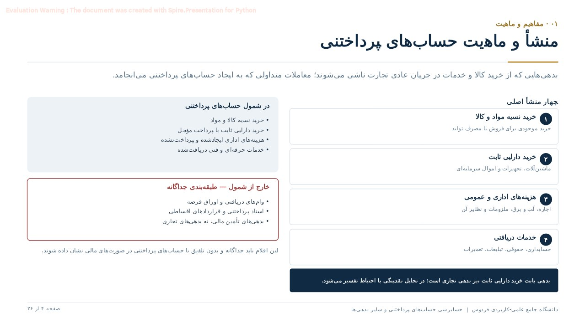
متن ارائه این اسلاید
حسابهای پرداختنی بدهیهایی است که از خرید کالا و خدمات در جریان عادی کار شرکت به وجود میآید.
چهار منشأ اصلی دارد: خرید نسیه مواد و کالا؛ خرید دارایی ثابت مثل ماشینآلات و تجهیزات؛ هزینههای اداری و عمومی مثل اجاره، آب و برق و ملزومات؛ و خدماتی که شرکت دریافت کرده است، مثل خدمات حسابداری، حقوقی، تبلیغات و تعمیرات.
پس هر وقت شرکت کالا یا خدمتی را گرفته و پولش را هنوز نداده باشد، یک حساب پرداختنی داریم.
در مقابل، بعضی بدهیها در این گروه قرار نمیگیرند: وامهای دریافتی، اوراق قرضه، اسناد پرداختنی و قراردادهای اقساطی. اینها بدهی تأمین مالی هستند، نه بدهی تجاری. باید در صورتهای مالی جدا نشان داده شوند و با حسابهای پرداختنی یکی نشوند.
یک نکته هم درباره دارایی ثابت: بدهیِ خرید دارایی ثابت هم بدهی تجاری است، ولی وقتی نقدینگی شرکت را تحلیل میکنیم باید آن را با احتیاط تفسیر کنیم.
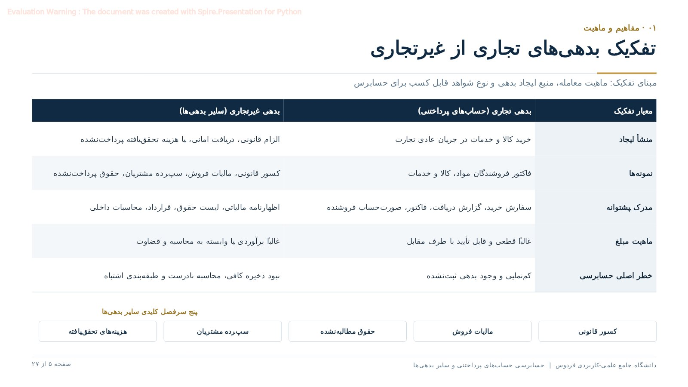
متن ارائه این اسلاید
حالا بدهی تجاری را با بدهی غیرتجاری، یعنی سایر بدهیها، مقایسه میکنیم. جدول پنج معیار دارد.
از نظر منشأ، بدهی تجاری از خرید کالا و خدمات میآید. ولی سایر بدهیها از الزام قانونی، دریافت امانی یا هزینه تحققیافتهای میآید که پرداخت نشده است.
نمونه بدهی تجاری، فاکتور فروشندگان است. نمونه سایر بدهیها، کسور قانونی، مالیات فروش، سپرده مشتریان و حقوق پرداختنشده است.
مدرک پشتوانه هم فرق دارد. برای بدهی تجاری، سفارش خرید، گزارش دریافت، فاکتور و صورتحساب فروشنده را داریم. اما برای سایر بدهیها باید به اظهارنامه مالیاتی، لیست حقوق، قرارداد و محاسبات داخلی شرکت تکیه کنیم.
مبلغ بدهی تجاری معمولاً قطعی است و میشود آن را از طرف مقابل پرسید. ولی مبلغ سایر بدهیها اغلب برآوردی است و به محاسبه و قضاوت بستگی دارد.
برای همین خطر اصلی هم فرق میکند. در بدهی تجاری، خطر اصلی بدهی ثبتنشده است. در سایر بدهیها، خطر اصلی ذخیره ناکافی، محاسبه نادرست و طبقهبندی اشتباه است.
پنج سرفصل مهم سایر بدهیها هم روی اسلاید آمده است. در بخش پایانی ارائه به آنها میرسیم.

متن ارائه این اسلاید
برای اینکه بدانیم بدهی از کجا وارد دفاتر میشود، باید چرخه خرید و پرداخت را بشناسیم. این چرخه شش مرحله دارد.
اول، دایرهای که به کالا نیاز دارد تقاضای خرید میدهد. دوم، دایره خرید سفارش خرید صادر میکند. سوم، انبار کالا را تحویل میگیرد و گزارش دریافت مینویسد؛ انبار باید از دایره خرید مستقل باشد. چهارم، بدهی در دفتر پرداختنی ثبت و بسته اسناد پرداخت تشکیل میشود. پنجم، مدارک با هم تطبیق و تأیید میشود. ششم، خزانهداری پول را میپردازد و مدارک را باطل میکند.
قلب این چرخه تطبیق سهگانه است. فاکتور فروشنده با سفارش خرید مقایسه میشود تا مقدار، قیمت و شرایط درست باشد. با گزارش دریافت مقایسه میشود تا معلوم شود همان مقدار واقعاً به انبار رسیده است. شرایط پرداخت هم با قرارداد سنجیده میشود. اگر این تطبیق انجام نشود، ممکن است شرکت برای کالایی که نرسیده یا با قیمتی بیشتر پول بدهد.
چهار کنترل کلیدی هم در چرخه هست: مهر تاریخ روی هر فاکتور در همان روز دریافت؛ شماره ردیف برای سفارشهای خرید و بستههای اسناد؛ استقلال دایره دریافت از دایره خرید؛ و باطل کردن مدارک بعد از پرداخت تا دوباره استفاده نشود.
یک ضعف رایج هم این است که تحویلگیرنده کالا را با سفارش مقایسه نمیکند و به فهرست بستهبندی فروشنده اعتماد میکند.
پس پرسش نهایی چرخه این است: آیا پول بابت کالایی پرداخت شده که واقعاً رسیده، و با قیمتی که توافق شده بود؟

متن ارائه این اسلاید
گروه دیگری از بدهیها، هزینههای تحققیافته پرداختنشده است. یعنی شرکت در طول دوره خدمتی گرفته، ولی تا تاریخ ترازنامه پولش را نداده است. این بدهیها با گذشت زمان ایجاد میشوند. نمونههایش بهره، اجاره، مالیات، حقوق و دستمزد، بیمه، پاداش و مرخصی است.
تفاوت مهم این است که اینجا فاکتوری از فروشنده نداریم و مبلغ را مدیریت برآورد میکند.
سه ویژگی کار حسابرس را سخت میکند. اول، مدرک بیرونی نداریم و شواهد بیشتر داخلی است. دوم، مبلغ به قضاوت مدیریت بستگی دارد. سوم، انگیزه کمنمایی وجود دارد، چون هر ریال ذخیره کمتر یعنی یک ریال سود بیشتر.
اما حسابرس یک کمک خوب دارد: این برآوردها در دوره بعد تسویه میشوند. اگر مبلغ پرداختشده با برآورد پایان سال فاصله زیادی داشته باشد، همین اختلاف شاهد حسابرسی است.
مبنای این بحث، استاندارد حسابرسی ۵۴۰ درباره حسابرسی برآوردهای حسابداری و استاندارد حسابداری شماره ۴ درباره ذخایر است.
حالا یک سؤال از شما دارم: اگر مدیریت ذخیره مرخصی استفادهنشده را کمتر از واقع برآورد کند، سود دوره و کدام نسبت مالی تغییر میکند؟
پاسخ این است که هزینه کمتر ثبت میشود، پس سود بیشتر از واقع نشان داده میشود. بدهی جاری هم کمتر میشود و در نتیجه نسبت جاری بهتر از واقع دیده میشود.

متن ارائه این اسلاید
کتاب برای حسابرسی حسابهای پرداختنی شش هدف تعیین کرده است.
هدف اول، بررسی کفایت کنترل داخلی حسابهای پرداختنی و چرخه خرید و پرداخت است.
هدف دوم، اعتبار بدهیهای ثبتشده است؛ یعنی بدهیای که در دفاتر هست واقعاً وجود دارد و تعهد شرکت است.
هدف سوم، کامل بودن است؛ یعنی همه بدهیها ثبت شده باشد. با توضیحی که دادم، این مهمترین هدف این فصل است.
هدف چهارم، صحت محاسبات جدولهای پشتوانه و مطابقت آنها با دفتر کل است.
هدف پنجم، درستی ارزشیابی بدهیهاست.
و هدف ششم، کفایت افشا و نحوه ارائه بدهیها در صورتهای مالی است.
در کنار هر هدف، ادعای متناظر آن را نوشتهایم: وجود، کامل بودن، صحت ریاضی، ارزشیابی و ارائه و افشا. خودِ این شش هدف از کتاب است. ارتباط دادن آنها با ادعاها را ما بر پایه چارچوب استاندارد حسابرسی ۵۰۰ انجام دادهایم.

متن ارائه این اسلاید
این جدول هدفها را به کار عملی وصل میکند. هر سطر یک خطر، ادعایی که تهدید میشود، روش رسیدگی و شاهد اصلی را نشان میدهد.
خطر اول، ثبت نشدن بدهی پایان دوره است که کامل بودن را تهدید میکند. پاسخ حسابرس، بررسی پرداختها و فاکتورهای بعد از تاریخ ترازنامه است.
خطر دوم، ثبت بدهی غیرواقعی یا تکراری است که به ادعای وجود مربوط میشود. اینجا حسابرس به سفارش خرید، گزارش دریافت و فاکتور مراجعه میکند.
خطر سوم، کالای در راه و خطای انقطاع زمانی است. حسابرس شماره آخرین گزارش دریافت سال را با فهرست پرداختنیها مقایسه میکند.
خطر چهارم، برآورد مدیریت در هزینههای تحققیافته است که به ارزشیابی برمیگردد. حسابرس مفروضات را بازبینی و محاسبات را آزمون میکند و برآوردهای قبلی را با تسویه واقعی آنها میسنجد.
خطر پنجم، معاملات با اشخاص وابسته و طبقهبندی است که به ارائه و افشا مربوط است.
پس منطق کار ساده است: خطر را میشناسیم، ادعای مربوط را مشخص میکنیم و روش متناسب را انتخاب میکنیم. این همان رویکردی است که استانداردهای حسابرسی ۳۱۵ و ۳۳۰ از حسابرس میخواهند.
بخش من اینجا تمام میشود. ادامه ارائه، یعنی کنترل داخلی و شروع آزمونها، با نفر بعدی است.
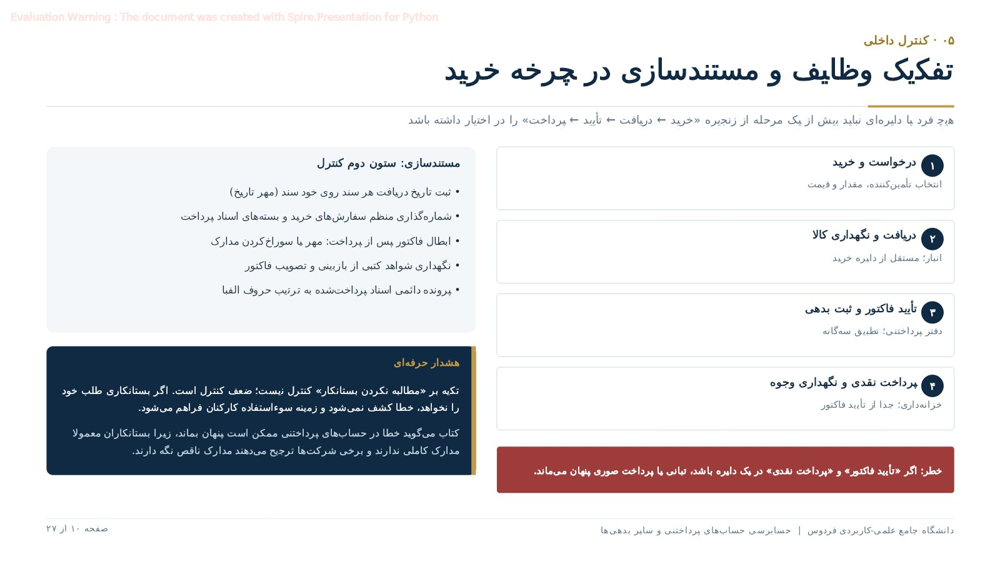
متن ارائه این اسلاید
(نفر بعدی)
سلام. بحث را از کنترل داخلی ادامه میدهم.
اولین و مهمترین کنترل در چرخه خرید، تفکیک وظایف است. قاعده این است که هیچ فرد یا دایرهای نباید بیش از یک مرحله از زنجیره خرید، دریافت، تأیید و پرداخت را در دست داشته باشد.
چهار وظیفه باید از هم جدا باشد: درخواست و خرید؛ دریافت و نگهداری کالا در انبار؛ تأیید فاکتور و ثبت بدهی در دفتر پرداختنی؛ و پرداخت پول در خزانهداری.
مثلاً اگر تأیید فاکتور و پرداخت در یک دایره باشد، همان فرد میتواند فاکتوری صوری را تأیید کند و پولش را هم بپردازد، بدون اینکه کسی متوجه شود.
ستون دوم کنترل، مستندسازی است. تاریخ دریافت روی هر سند مهر میشود. سفارشهای خرید و بستههای اسناد شمارهگذاری منظم دارند. فاکتور بعد از پرداخت با مهر یا سوراخ کردن باطل میشود. شواهد کتبی بازبینی و تصویب فاکتور نگهداری میشود و اسناد پرداختشده به ترتیب الفبا بایگانی میشود.
کتاب یک هشدار هم میدهد. شرکت نباید به این دل خوش کند که اگر اشتباهی باشد، بستانکار خودش خبر میدهد. اگر بستانکار طلبش را مطالبه نکند، خطا کشف نمیشود و راه سوءاستفاده کارکنان باز میماند. پس تکیه بر پیگیری بستانکار، کنترل نیست؛ ضعف کنترل است.

متن ارائه این اسلاید
چهار کنترل تکمیلی دیگر هم در کتاب آمده است.
اول، تطبیق ماهانه. تراز آزمایشی معین بستانکاران هر ماه با حساب کنترل در دفتر کل مطابقت داده میشود و مدرک این تطبیق نگهداری میشود.
دوم، صورتحساب ماهانه فروشندگان. صورتحساب هر فروشنده با مدارک شرکت تطبیق میشود و هر اختلاف تا آخر پیگیری میشود. اختلافی که حل نشود، میتواند نشانه خطا یا بدهی ثبتنشده باشد.
سوم، پیشپرداختها. پولی که پیشاپیش به فروشنده داده میشود باید بهعنوان طلب ثبت شود و وقتی فاکتور رسید، تسویه شود. کسر از مبلغ فاکتور هم فقط طبق قرارداد مجاز است.
چهارم، سیستم کامپیوتری. سفارش خرید و گزارش دریافت در سیستم ثبت و نگهداری میشود و اطلاعات خرید و پرداخت بهراحتی در اختیار مدیریت قرار میگیرد. این موضوع قدرت کنترل را بالا میبرد.
اما این کنترلها چه اثری بر کار حسابرس دارند؟ اگر کنترلها مؤثر باشند، حسابرس خطر کنترل را پایینتر برآورد میکند و حجم آزمونهای محتوا را کم میکند. اگر کنترلها ضعیف باشند، باید آزمون محتوا را بیشتر کند و نمونههای بزرگتری انتخاب کند. این رابطه در استاندارد حسابرسی ۳۳۰ آمده است.

متن ارائه این اسلاید
حسابرس کنترل داخلی را در چهار گام ارزیابی میکند.
گام اول، شناخت سیستم است. حسابرس با فلوچارت، شرح کتبی یا پرسشنامه کنترل داخلی، سیستم را مستند میکند و بیشتر به استقلال دایرهها از هم توجه دارد.
گام دوم، برآورد خطر کنترل است. برای هر سرفصل مهم، سطح خطر کنترل تعیین و آزمونهای اضافی لازم طراحی میشود.
گام سوم، اجرای آزمون کنترلهاست تا حسابرس مطمئن شود کنترلها در عمل هم کار میکنند.
گام چهارم، برآورد دوباره خطر کنترل و طراحی آزمونهای محتوا بر پایه آن است.
چند نمونه از پرسشهای پرسشنامه را روی اسلاید میبینید. مثلاً: آیا تراز آزمایشی حسابهای پرداختنی هر ماه تهیه و با دفتر کل مطابقت داده میشود؟ آیا صورتحساب ماهانه فروشندگان تطبیق داده میشود؟ آیا از پرداخت دوباره یک فاکتور جلوگیری میشود؟ آیا مانده بدهکار فروشندگان به دایره خرید گزارش میشود؟
نتیجه هم روشن است. اگر شرکت بهموقع ثبت میکند، ماهانه تطبیق میدهد و وظایف را تفکیک کرده، خطر کنترل پایین است و آزمون محتوا محدودتر میشود. اگر به صورتحسابها بیتوجه است، دیر ثبت میکند و اقلام کهنه در حسابها مانده، خطر کنترل بالاست و آزمون محتوا باید گسترده باشد.

متن ارائه این اسلاید
کتاب دو نمونه عملی از آزمون کنترل میآورد.
در نمونه اول، حسابرس از حساب کنترل بستانکاران در دفتر کل شروع میکند. چند ثبت را انتخاب میکند و هر کدام را تا دفتر معین بستانکاران و دفتر روزنامه پرداخت نقدی دنبال میکند. هر قلم باید قابل ردیابی باشد. اگر قلمی پیدا شود که نتوان ردّش را گرفت، نشانه ضعف است. حسابرس معمولاً همه اقلام یک یا دو ماه را بررسی میکند و درباره اقلام غیرعادی پرسوجو میکند. هدف این آزمون، اطمینان از انتقال درست اقلام بین دفاتر است.
در نمونه دوم، حسابرس چند حساب معین بستانکار را انتخاب میکند و هر قلم آن را به مدارک اولیه برمیگرداند: سفارش خرید، گزارش دریافت، فاکتور و مدرک پرداخت. هدف این است که درستی ثبتهای هر بستانکار ثابت شود.
کتاب میگوید اگر خرید، بازبینی فاکتور و پرداخت به عهده دایرههای جدا باشد و کنترل داخلی هم مناسب به نظر برسد، همین ردیابی از دفاتر به مدارک اولیه میتواند شواهد کافی فراهم کند.
یک راه خوب هم این است که از یک قلم در دفتر روزنامه خرید شروع کنیم و آن را تا حساب معین بستانکار و بعد تا مدرک اولیه دنبال کنیم. با این کار هم ثبت را آزمودهایم و هم مستندسازی را.
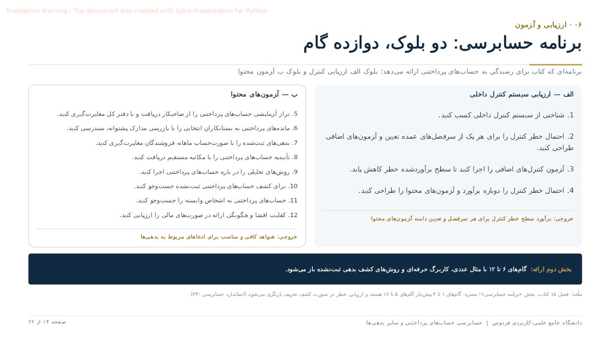
متن ارائه این اسلاید
اینجا کل برنامه حسابرسی کتاب را در یک نگاه میبینیم: دوازده گام در دو بخش.
بخش الف، چهار گام ارزیابی کنترل داخلی است که همین حالا مرور کردیم. نتیجه آن، برآورد خطر کنترل و تعیین دامنه آزمونهای محتواست.
بخش ب، هشت گام آزمون محتواست. گام پنجم، گرفتن تراز آزمایشی حسابهای پرداختنی و مطابقت آن با دفتر کل است. گام ششم، سندرسی مانده بستانکاران انتخابی است. گام هفتم، مغایرتگیری با صورتحساب ماهانه فروشندگان است. گام هشتم، گرفتن تأییدیه با مکاتبه مستقیم است. گام نهم، روشهای تحلیلی است. گام دهم، جستوجوی بدهیهای ثبتنشده است. گام یازدهم، جستوجوی پرداختنی به اشخاص وابسته است. و گام دوازدهم، ارزیابی افشا و ارائه در صورتهای مالی است.
دو نکته را در نظر داشته باشید. اول اینکه گامهای یک تا چهار پیشنیاز بقیه گامهاست. دوم اینکه اگر حسابرس در آزمونهای محتوا تحریفی پیدا کند، باید برآورد خطر خود را بازنگری کند.
از اسلاید بعد، این گامها را یکییکی با مثال و کاربرگ میبینیم.

متن ارائه این اسلاید
گام پنجم با یک کاربرگ شروع میشود. این کاربرگ فرضی است و ما آن را برای تمرین ساختهایم.
حسابرس فهرست بستانکاران را از صاحبکار میگیرد یا خودش تهیه میکند. اینجا چهار بستانکار داریم: شرکت آلفا با دوازده میلیون و چهارصد هزار ریال، بازرگانی بتا با هشت میلیون و صد و پنجاه هزار ریال، صنایع گاما با پنج میلیون ریال و خدمات دلتا با سه میلیون و هفتصد و پنجاه هزار ریال. جمع ماندهها طبق دفاتر بیست و نه میلیون و سیصد هزار ریال است.
روش کار چهار قدم دارد. فهرست را میگیریم. جمع آن را کنترل میکنیم و هر مانده را تا حساب معین دنبال میکنیم. جمع را با حساب کنترل دفتر کل مقایسه میکنیم. و هر بدهی ثبتنشدهای را که در ادامه رسیدگی پیدا شود، در ستون «بدهی ثبتنشده» مینویسیم.
در این مثال دو قلم پیدا شده است: دو میلیون و سیصد هزار ریال برای بازرگانی بتا و یک میلیون و دویست هزار ریال برای خدمات دلتا؛ روی هم سه میلیون و پانصد هزار ریال. در اسلایدهای بعد نشان میدهیم این دو قلم چطور کشف شدند.
یک هشدار هم داریم. اگر جمع فهرست با حساب کنترل یکی باشد، به این معنا نیست که فهرست کامل است. بدهیای که اصلاً ثبت نشده، در هیچکدام از این دو نیست. دو اشتباه مخالف هم میتوانند همدیگر را بپوشانند.
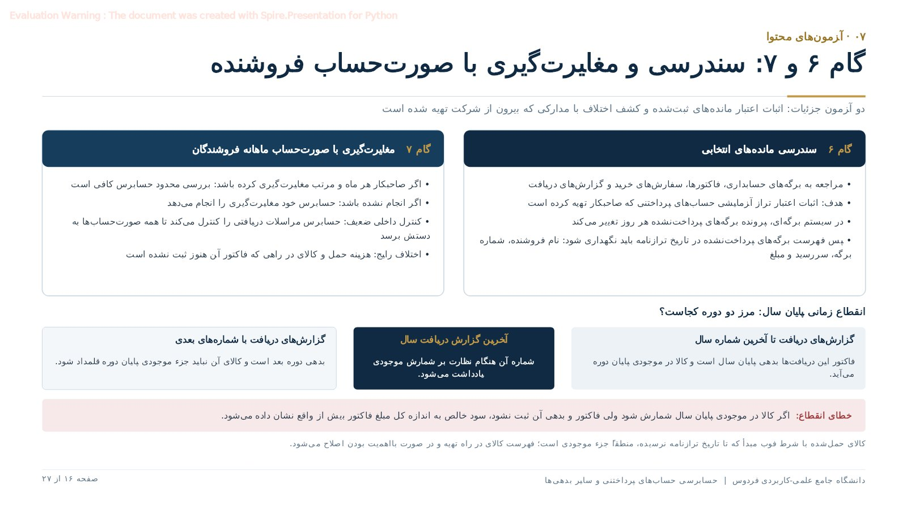
متن ارائه این اسلاید
گام ششم سندرسی است. حسابرس چند مانده را انتخاب میکند و به برگههای حسابداری، فاکتورها، سفارشهای خرید و گزارشهای دریافت مراجعه میکند تا مطمئن شود ترازی که صاحبکار داده معتبر است.
یک نکته عملی هم هست. در سیستم برگهای، پرونده برگههای پرداختنشده هر روز عوض میشود. پس صاحبکار باید فهرست برگههای پرداختنشده در تاریخ ترازنامه را با نام فروشنده، شماره برگه، سررسید و مبلغ نگه دارد.
گام هفتم، مغایرتگیری با صورتحساب ماهانه فروشندگان است. اگر صاحبکار این کار را هر ماه و مرتب انجام داده باشد، بررسی محدود حسابرس کافی است. اگر انجام نداده باشد، حسابرس خودش مغایرتگیری میکند. و اگر کنترل داخلی ضعیف باشد، حسابرس حتی نامههای رسیده را کنترل میکند تا مطمئن شود همه صورتحسابها به دستش میرسد. اختلافهای رایج، هزینه حمل و کالای در راهی است که فاکتورش هنوز ثبت نشده است.
بخش پایانی اسلاید درباره انقطاع زمانی پایان سال است. حسابرس هنگام نظارت بر شمارش موجودی، شماره آخرین گزارش دریافت سال را یادداشت میکند. فاکتور همه دریافتها تا آن شماره، بدهی پایان سال است و کالایش هم در موجودی میآید. گزارشهای دریافت با شمارههای بعدی به دوره بعد مربوط است.
اگر کالایی در موجودی پایان سال شمرده شود ولی بدهی آن ثبت نشود، سود خالص به اندازه کل مبلغ فاکتور بیشتر از واقع نشان داده میشود.
درباره کالای در راه هم کتاب میگوید کالایی که با شرط فوب مبدأ حمل شده و هنوز نرسیده، منطقاً جزء موجودی شرکت است. حسابرس فهرست این کالاها را تهیه میکند و اگر بااهمیت باشد، اصلاح را پیشنهاد میدهد.
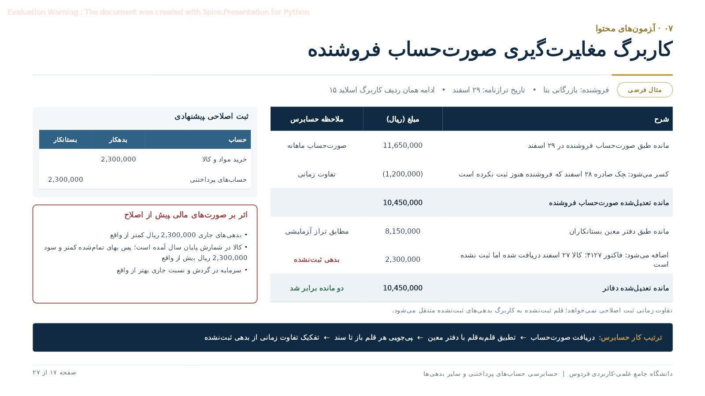
متن ارائه این اسلاید
حالا مغایرتگیری را روی یک مثال فرضی میبینیم: همان بازرگانی بتا از کاربرگ قبل.
صورتحساب فروشنده در ۲۹ اسفند یازده میلیون و ششصد و پنجاه هزار ریال را نشان میدهد، ولی دفاتر شرکت هشت میلیون و صد و پنجاه هزار ریال را. اختلاف سه میلیون و پانصد هزار ریال است و حسابرس باید آن را توضیح دهد.
قلم اول، چکی به مبلغ یک میلیون و دویست هزار ریال است که شرکت ۲۸ اسفند صادر کرده و فروشنده هنوز آن را ثبت نکرده است. این فقط تفاوت زمانی است. آن را از صورتحساب فروشنده کم میکنیم و به ده میلیون و چهارصد و پنجاه هزار ریال میرسیم.
قلم دوم، فاکتور شماره ۴۱۲۷ به مبلغ دو میلیون و سیصد هزار ریال است. کالای آن ۲۷ اسفند رسیده، ولی فاکتور در دفاتر ثبت نشده است. این یک بدهی ثبتنشده است. آن را به مانده دفاتر اضافه میکنیم و باز به ده میلیون و چهارصد و پنجاه هزار ریال میرسیم. دو مانده برابر شد.
تفاوت زمانی ثبت اصلاحی نمیخواهد. اما برای فاکتور ثبتنشده، حسابرس این ثبت را پیشنهاد میکند: خرید مواد و کالا بدهکار و حسابهای پرداختنی بستانکار، هر دو به مبلغ دو میلیون و سیصد هزار ریال.
اگر این اصلاح انجام نشود چه میشود؟ بدهی جاری دو میلیون و سیصد هزار ریال کمتر از واقع است. چون کالا در شمارش پایان سال آمده، بهای تمامشده کمتر و سود به همین مبلغ بیشتر از واقع است. سرمایه در گردش و نسبت جاری هم بهتر از واقع دیده میشود.
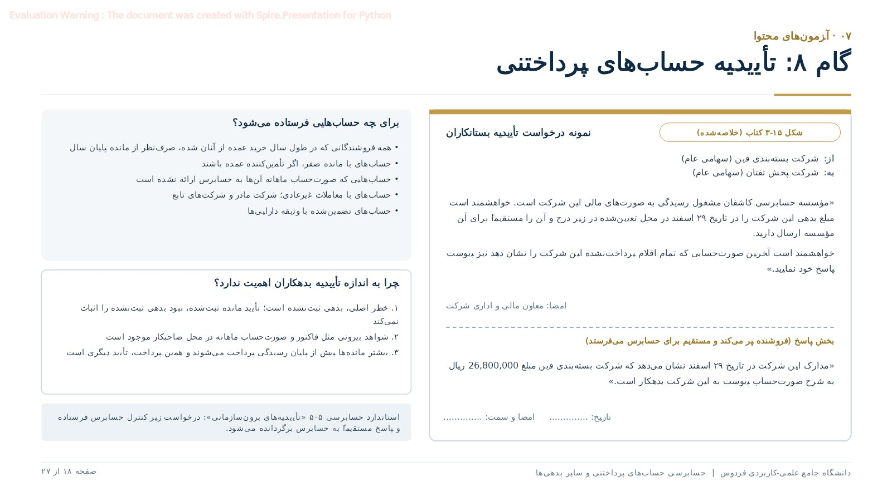
متن ارائه این اسلاید
گام هشتم، تأییدیه حسابهای پرداختنی است. نمونهای که میبینید خلاصه شکل ۱۵-۳ کتاب است.
شرکت بستهبندی فین از فروشنده خود، شرکت پخش تفتان، میخواهد مبلغ طلبش در ۲۹ اسفند را بنویسد و پاسخ را مستقیم برای مؤسسه حسابرسی بفرستد. همچنین میخواهد آخرین صورتحساب را که همه اقلام پرداختنشده را نشان میدهد، پیوست کند.
به دو نکته دقت کنید. اول، در متن درخواست مبلغی نوشته نشده و خودِ فروشنده باید مبلغ را بنویسد. در این نمونه فروشنده بیست و شش میلیون و هشتصد هزار ریال را اعلام کرده است. دوم، پاسخ مستقیم به دست حسابرس میرسد، نه شرکت. این همان چیزی است که استاندارد حسابرسی ۵۰۵ هم میخواهد.
تأییدیه برای چه حسابهایی فرستاده میشود؟ برای همه فروشندگانی که در طول سال خرید عمده از آنها شده، حتی اگر مانده پایان سالشان صفر باشد. چون ما دنبال بدهی ثبتنشده هستیم و مانده صفر میتواند همان جایی باشد که چیزی جا افتاده است. همچنین برای حسابهایی که صورتحساب ماهانه ندارند، حسابهای با معاملات غیرعادی، شرکت مادر و شرکتهای تابع، و حسابهایی که با وثیقه تضمین شدهاند.
کتاب میگوید تأییدیه بستانکاران به اندازه تأییدیه بدهکاران اهمیت ندارد و سه دلیل میآورد. اول، تأیید مانده ثبتشده ثابت نمیکند که بدهی ثبتنشدهای وجود ندارد. دوم، برای بدهیها شواهد بیرونی مثل فاکتور و صورتحساب فروشنده در خود شرکت موجود است. سوم، بیشتر این بدهیها تا پایان رسیدگی پرداخت میشوند و همین پرداخت، تأیید دیگری است.
ادامه آزمونهای محتوا و بخش پایانی ارائه با نفر بعدی است.
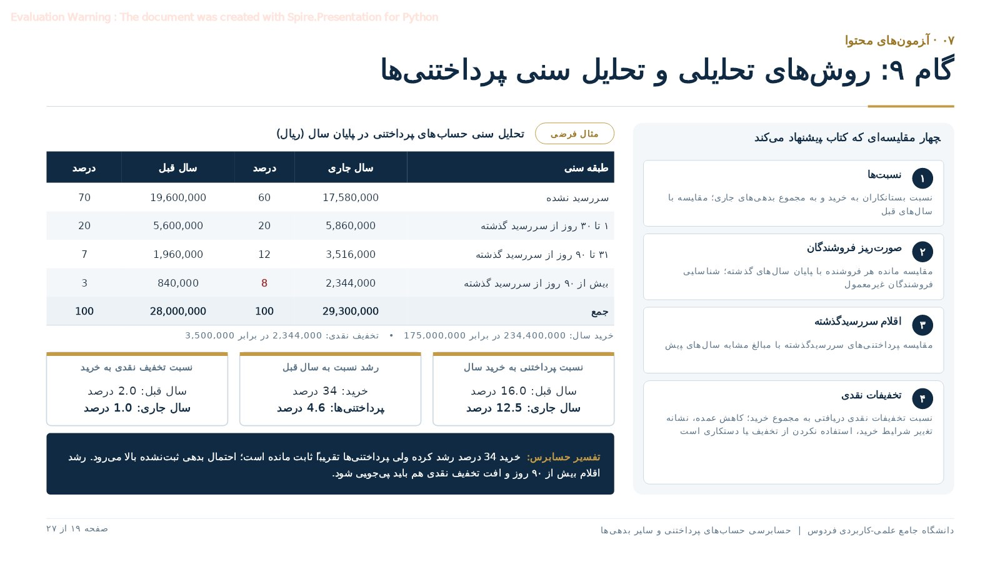
متن ارائه این اسلاید
(نفر بعدی)
سلام. بخش پایانی را من ارائه میکنم.
گام نهم، روشهای تحلیلی است. یعنی حسابرس با مقایسه ارقام و نسبتها دنبال چیزهای غیرعادی میگردد. کتاب چهار مقایسه پیشنهاد میکند.
اول، نسبت بستانکاران به خرید و به کل بدهیهای جاری، در مقایسه با سالهای قبل. دوم، مقایسه مانده هر فروشنده با پایان سالهای گذشته. سوم، مقایسه اقلام سررسیدگذشته با سالهای پیش. چهارم، نسبت تخفیفهای نقدی به کل خرید. اگر این نسبت خیلی کم شده باشد، یا شرایط خرید عوض شده، یا شرکت از تخفیفها استفاده نکرده، یا حسابها دستکاری شده است.
حالا مثال فرضی را ببینید. جمع پرداختنیها امسال بیست و نه میلیون و سیصد هزار ریال و سال قبل بیست و هشت میلیون ریال بوده است؛ یعنی کمتر از پنج درصد رشد. اما خرید سال از صد و هفتاد و پنج میلیون ریال به حدود دویست و سی و چهار میلیون ریال رسیده؛ یعنی سی و چهار درصد رشد. در نتیجه نسبت پرداختنی به خرید از شانزده درصد به دوازده و نیم درصد افتاده است.
این برای حسابرس یک علامت سؤال است: خرید اینقدر زیاد شده، پس چرا بدهی تقریباً ثابت مانده است؟ شاید بخشی از بدهیها ثبت نشده باشد.
جدول سنی هم دو نکته دارد. سهم اقلامی که بیش از نود روز از سررسیدشان گذشته، از سه درصد به هشت درصد رسیده است. نسبت تخفیف نقدی هم از دو درصد به یک درصد کم شده است. هر دو باید پیگیری شود.
توجه کنید که روش تحلیلی چیزی را ثابت نمیکند؛ فقط به حسابرس میگوید کجا را بیشتر بگردد.
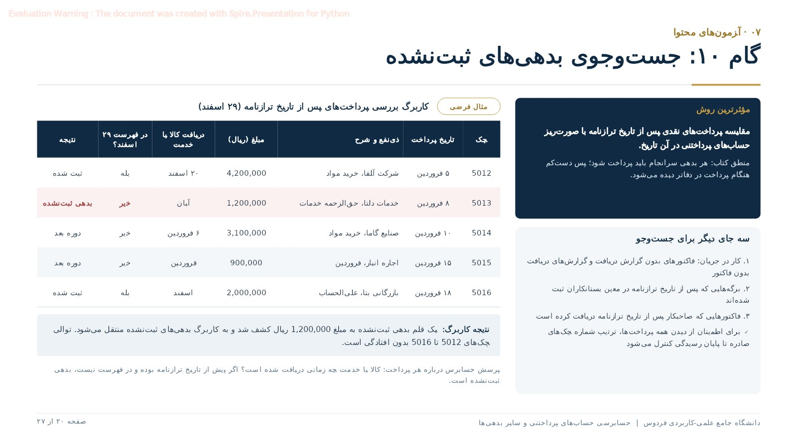
متن ارائه این اسلاید
گام دهم مهمترین گام این فصل است: جستوجوی بدهیهای ثبتنشده.
مؤثرترین روش این است که پرداختهای بعد از تاریخ ترازنامه را با فهرست حسابهای پرداختنی در آن تاریخ مقایسه کنیم. منطق کتاب ساده است: هر بدهی بالاخره باید پرداخت شود. پس حتی اگر در پایان سال ثبت نشده باشد، موقع پرداخت در دفاتر دیده میشود.
سه جای دیگر هم برای جستوجو هست: فاکتورهایی که گزارش دریافت ندارند و گزارشهای دریافتی که فاکتور ندارند؛ برگههایی که بعد از تاریخ ترازنامه در دفتر معین بستانکاران ثبت شدهاند؛ و فاکتورهایی که بعد از تاریخ ترازنامه به شرکت رسیده است. حسابرس ترتیب شماره چکها را هم کنترل میکند تا هیچ پرداختی از قلم نیفتد.
در کاربرگ فرضی، پنج چک بعد از ۲۹ اسفند صادر شده است. درباره هر چک یک سؤال میپرسیم: کالا یا خدمت آن چه زمانی دریافت شده است؟
چک اول برای شرکت آلفا است. کالا ۲۰ اسفند رسیده و بدهی در فهرست هست. مشکلی نیست.
چک دوم یک میلیون و دویست هزار ریال برای خدمات دلتا است. خدمت در آبان انجام شده، ولی در فهرست ۲۹ اسفند نیست. قبل از اینکه جواب را بگویم، شما بگویید: این قلم چیست؟ بله، بدهی ثبتنشده است.
چک سوم برای کالایی است که ۶ فروردین رسیده و چک چهارم اجاره فروردین است. هر دو به دوره بعد مربوطاند و درست است که در فهرست نباشند.
چک پنجم هم پرداخت علیالحساب به بازرگانی بتا است که بدهی آن ثبت شده بود.
نتیجه کاربرگ: یک بدهی ثبتنشده به مبلغ یک میلیون و دویست هزار ریال. این همان قلمی است که در کاربرگ اسلاید پانزده برای خدمات دلتا دیدیم.
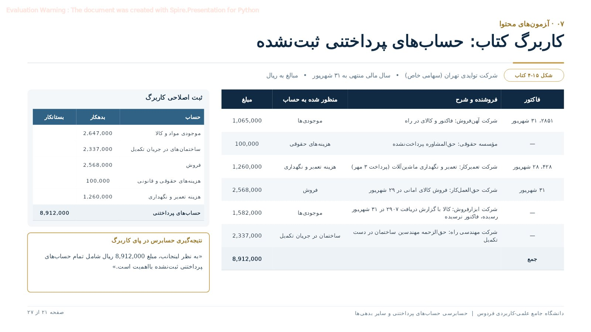
متن ارائه این اسلاید
این کاربرگ از خود کتاب است؛ شکل ۱۵-۴. سال مالی شرکت تولیدی تهران ۳۱ شهریور تمام میشود و حسابرس شش بدهی ثبتنشده پیدا کرده است.
اول، فاکتور شرکت آهنفروش برای کالای در راه، به مبلغ یک میلیون و شصت و پنج هزار ریال.
دوم، حقالمشاوره پرداختنشده مؤسسه حقوقی، صد هزار ریال.
سوم، تعمیر و نگهداری ماشینآلات که فاکتورش ۲۸ شهریور صادر و ۳ مهر پرداخت شده، یک میلیون و دویست و شصت هزار ریال.
چهارم، بدهی به شرکت حقالعملکار بابت فروش کالای امانی در ۲۹ شهریور، دو میلیون و پانصد و شصت و هشت هزار ریال.
پنجم، کالایی که ۳۱ شهریور رسیده ولی فاکتورش نرسیده، یک میلیون و پانصد و هشتاد و دو هزار ریال.
ششم، حقالزحمه مهندسان ساختمانِ در دست تکمیل، دو میلیون و سیصد و سی و هفت هزار ریال.
جمع این شش قلم هشت میلیون و نهصد و دوازده هزار ریال است.
حالا ثبت اصلاحی را ببینید. طرف بستانکار یک قلم است: حسابهای پرداختنی. اما طرف بدهکار فرق میکند: موجودی مواد و کالا، ساختمان در جریان تکمیل، فروش، هزینههای حقوقی و هزینه تعمیر و نگهداری.
نکته مهم همینجاست. بعضی از این اقلام به حساب دارایی میروند و بر سود اثری ندارند. بعضی دیگر هزینهاند یا فروش را کم میکنند و سود را کاهش میدهند. در اسلاید بعد میبینیم که همین تفاوت، مبنای قضاوت درباره اهمیت است.
حسابرس در پای کاربرگ نتیجه خود را هم مینویسد: به نظر او این مبلغ، همه حسابهای پرداختنی ثبتنشده بااهمیت را در بر میگیرد.
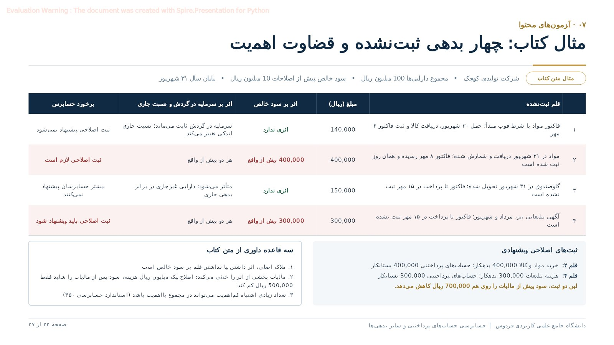
متن ارائه این اسلاید
آیا حسابرس برای هر بدهی ثبتنشدهای که پیدا میکند باید ثبت اصلاحی پیشنهاد بدهد؟ کتاب با یک مثال جواب میدهد.
شرکتی کوچک با صد میلیون ریال دارایی و ده میلیون ریال سود خالص را در نظر بگیرید. پایان سال ۳۱ شهریور است و چهار قلم ثبتنشده پیدا شده است.
قلم اول، فاکتور صد و چهل هزار ریالی موادی است که ۳۰ شهریور با شرط فوب مبدأ حمل شده و ۴ مهر رسیده است. اگر ثبت شود، هم موجودی و هم بدهی زیاد میشود و سود تغییری نمیکند. پس اصلاح پیشنهاد نمیشود.
قلم دوم، چهارصد هزار ریال موادی است که ۳۱ شهریور رسیده و در موجودی شمرده شده، ولی فاکتورش ۸ مهر ثبت شده است. اینجا موجودی درست است اما خرید ثبت نشده. پس سود چهارصد هزار ریال بیشتر از واقع است و اصلاح لازم است.
قلم سوم، گاوصندوق صد و پنجاه هزار ریالی است. دارایی ثابت و بدهی هر دو ثبت نشدهاند. سود تغییری نمیکند و فقط نسبتها کمی عوض میشود. بیشتر حسابرسان برای آن اصلاح پیشنهاد نمیکنند.
قلم چهارم، سیصد هزار ریال هزینه تبلیغات سه ماه آخر سال است. این هزینه همین دوره است. سود سیصد هزار ریال بیشتر از واقع است و باید اصلاح شود.
از این مثال سه قاعده میگیریم. قاعده اول: ببینیم طرف بدهکارِ ثبت، دارایی است یا هزینه. اگر هزینه باشد، سود تغییر میکند و موضوع مهمتر است.
قاعده دوم، اثر مالیات است. کتاب میگوید اصلاح یک میلیون ریال هزینه، شاید سود بعد از مالیات را فقط پانصد هزار ریال کم کند.
قاعده سوم این است که چند اشتباه کوچک میتوانند روی هم بااهمیت شوند. پس حسابرس باید آنها را جمع بزند و اثر کلی را بسنجد. موضوع استاندارد حسابرسی ۴۵۰ هم ارزیابی همین تحریفهای شناساییشده است.
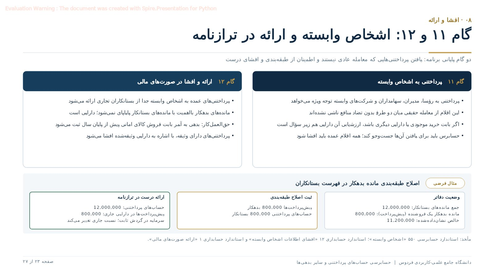
متن ارائه این اسلاید
دو گام آخر برنامه مانده است.
گام یازدهم، جستوجوی پرداختنی به اشخاص وابسته است؛ یعنی بدهی به مدیران، سهامداران و شرکتهای وابسته. این بدهیها از معاملهای میان دو طرف مستقل به وجود نیامدهاند. اگر این بدهی بابت خرید موجودی یا دارایی دیگری باشد، باید به ارزش آن دارایی هم دقت کرد. حسابرس باید این اقلام را پیدا کند و مطمئن شود اقلام عمده افشا شده است. مبنای این کار استاندارد حسابرسی ۵۵۰ و استاندارد حسابداری شماره ۱۲ است.
گام دوازدهم، ارائه و افشاست و چهار نکته دارد. اول، پرداختنیهای عمده به اشخاص وابسته جدا از بستانکاران تجاری نشان داده میشود. دوم، اگر حساب فروشندهای مانده بدهکار بااهمیت داشته باشد، نباید آن را از بدهیها کم کرد؛ این مانده دارایی است. سوم، اگر شرکت حقالعملکار باشد، بدهی به صاحب کالا بابت کالای امانیِ فروختهشده باید تا پایان سال ثبت شده باشد. چهارم، پرداختنیهایی که وثیقه دارند باید افشا شوند.
مثال فرضی اسلاید نکته دوم را نشان میدهد. جمع ماندههای بستانکار دوازده میلیون ریال است و یک فروشنده هشتصد هزار ریال مانده بدهکار دارد، چون به او پیشپرداخت داده شده است. دفاتر مانده خالص یازده میلیون و دویست هزار ریال را نشان میدهد.
حسابرس اصلاح طبقهبندی را پیشنهاد میکند: پیشپرداختها بدهکار و حسابهای پرداختنی بستانکار، به مبلغ هشتصد هزار ریال.
بعد از اصلاح، بدهی دوازده میلیون ریال و پیشپرداخت هشتصد هزار ریال جداگانه نشان داده میشود. سود و سرمایه در گردش تغییر نمیکند، ولی نسبت جاری عوض میشود.
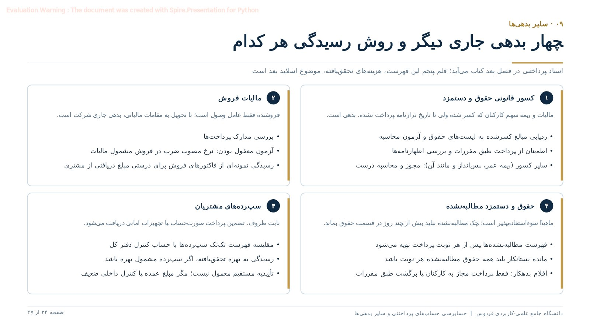
متن ارائه این اسلاید
تا اینجا درباره حسابهای پرداختنی تجاری صحبت کردیم. حالا به سایر بدهیهای جاری میرسیم. کتاب اسناد پرداختنی را به فصل بعد واگذار کرده و در این فصل چند بدهی دیگر را بررسی میکند.
اول، کسور قانونی حقوق و دستمزد. مالیات و بیمهای که از حقوق کارکنان کم شده ولی هنوز پرداخت نشده، بدهی شرکت است. حسابرس این مبالغ را با لیستهای حقوق مطابقت میدهد، محاسبه را آزمون میکند و بررسی میکند که پرداخت طبق مقررات انجام شده باشد.
دوم، مالیات فروش. شرکت این مالیات را از مشتری میگیرد تا به دولت بدهد. پس فقط واسطه وصول است و تا زمان پرداخت، بدهی جاری دارد. حسابرس مدارک پرداخت را میبیند و یک آزمون ساده هم انجام میدهد: نرخ مالیات را در فروش مشمول مالیات ضرب میکند و با رقم دفاتر مقایسه میکند.
سوم، حقوق و دستمزد مطالبهنشده. این حساب در معرض سوءاستفاده است. فهرست حقوق مطالبهنشده باید بعد از هر نوبت پرداخت تهیه شود و چکها نباید بیش از چند روز در قسمت حقوق بماند. حسابرس بررسی میکند که اقلام بدهکار این حساب فقط پرداخت مجاز به خود کارکنان یا برگشت طبق مقررات باشد.
چهارم، سپردههای مشتریان؛ مثل سپردهای که بابت ظروف یا تضمین پرداخت گرفته میشود. حسابرس فهرست سپردهها را با حساب کنترل دفتر کل مقایسه میکند و اگر سپرده بهره داشته باشد، بهره تحققیافته را هم بررسی میکند. معمولاً برای این حساب تأییدیه نمیفرستند، مگر مبلغ عمده یا کنترل داخلی ضعیف باشد.
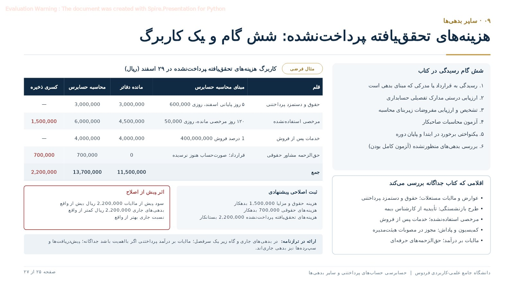
متن ارائه این اسلاید
آخرین گروه، هزینههای تحققیافته پرداختنشده است که در بخش اول با ماهیت آن آشنا شدیم.
کتاب برای رسیدگی به آنها شش گام میگوید: دیدن قرارداد یا مدرکی که مبنای بدهی است؛ ارزیابی درستی مدارک حسابداری؛ شناختن و ارزیابی مفروضات محاسبه؛ آزمون محاسبات صاحبکار؛ اطمینان از اینکه روش محاسبه در اول و آخر دوره یکسان بوده؛ و بررسی اینکه بدهی دیگری از قلم نیفتاده باشد.
کتاب چند قلم را هم جداگانه توضیح میدهد. مثلاً برای طرح بازنشستگی از کارشناس بیمه تأییدیه گرفته میشود و مجوز کمیسیون و پاداش را باید در مصوبات هیئتمدیره دید.
حالا کاربرگ فرضی را ببینید. حسابرس چهار قلم را دوباره محاسبه کرده است.
حقوق پنج روز آخر اسفند، روزی ششصد هزار ریال، سه میلیون ریال میشود و با دفاتر یکی است.
برای مرخصی استفادهنشده، صد و بیست روز مرخصی مانده و هر روز پنجاه هزار ریال است؛ یعنی شش میلیون ریال. اما دفاتر چهار و نیم میلیون ریال نشان میدهد. پس یک و نیم میلیون ریال کسری داریم.
خدمات پس از فروش یک درصد فروش است و با دفاتر میخواند.
برای حقالزحمه مشاور حقوقی، قرارداد وجود دارد ولی چون صورتحساب نرسیده، هیچ بدهی ثبت نشده است؛ هفتصد هزار ریال کسری.
جمع کسری دو میلیون و دویست هزار ریال است. ثبت پیشنهادی این است: هزینه حقوق و مزایا یک و نیم میلیون ریال و هزینههای حقوقی هفتصد هزار ریال بدهکار، و هزینههای تحققیافته پرداختنشده دو میلیون و دویست هزار ریال بستانکار.
بدون این اصلاح، سود پیش از مالیات دو میلیون و دویست هزار ریال بیشتر از واقع و بدهی جاری به همین مبلغ کمتر از واقع است.
این اقلام در ترازنامه جزء بدهیهای جاری میآیند و گاهی زیر یک سرفصل نشان داده میشوند. مالیات بر درآمد پرداختنی هم اگر بااهمیت باشد، جداگانه نشان داده میشود.
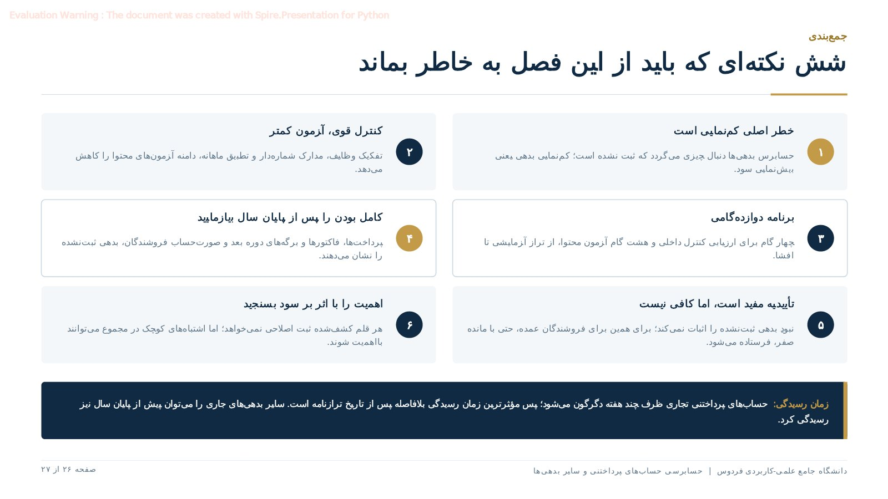
متن ارائه این اسلاید
اجازه بدهید کل فصل را در شش نکته جمع کنم.
اول، در بدهیها خطر اصلی کمنمایی است. حسابرس دنبال چیزی میگردد که ثبت نشده، و کمنمایی بدهی یعنی بیشنمایی سود.
دوم، کنترل داخلی قوی کار حسابرس را کم میکند. تفکیک وظایف، مدارک شمارهدار و تطبیق ماهانه، دامنه آزمونهای محتوا را کاهش میدهد.
سوم، برنامه حسابرسی دوازده گام دارد: چهار گام برای ارزیابی کنترل داخلی و هشت گام آزمون محتوا.
چهارم، کامل بودن را باید با مدارک بعد از پایان سال آزمود: پرداختها، فاکتورها و برگههای دوره بعد و صورتحساب فروشندگان.
پنجم، تأییدیه مفید است، اما کافی نیست؛ چون نبودِ بدهی ثبتنشده را ثابت نمیکند. برای همین برای فروشندگان عمده، حتی با مانده صفر، فرستاده میشود.
ششم، اهمیت را باید با اثر بر سود سنجید. هر قلمی که پیدا میشود ثبت اصلاحی نمیخواهد، اما اشتباههای کوچک روی هم میتوانند بااهمیت شوند.
یک نکته هم درباره زمان رسیدگی. مانده حسابهای پرداختنی تجاری ظرف چند هفته کاملاً عوض میشود. پس بهترین زمان رسیدگی به آن، بلافاصله بعد از تاریخ ترازنامه است. اما سایر بدهیهای جاری را میتوان پیش از پایان سال هم رسیدگی کرد.
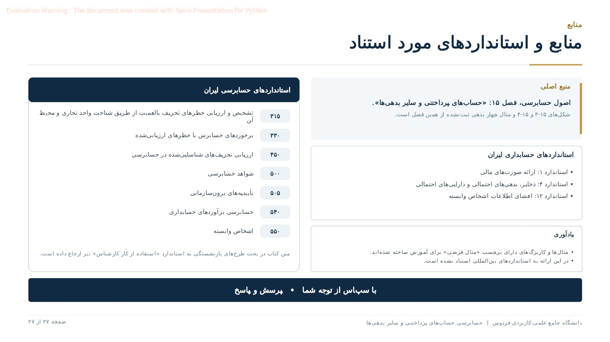
متن ارائه این اسلاید
در اسلاید پایانی، منابع را میبینید.
منبع اصلی ما فصل پانزدهم کتاب اصول حسابرسی است. شکلهای ۱۵-۳ و ۱۵-۴ و مثال چهار بدهی ثبتنشده از همین فصل گرفته شده است.
در کنار کتاب، به استانداردهای حسابرسی ایران استناد کردهایم: استانداردهای ۳۱۵، ۳۳۰، ۴۵۰، ۵۰۰، ۵۰۵، ۵۴۰ و ۵۵۰. از استانداردهای حسابداری ایران هم به استانداردهای شماره ۱، ۴ و ۱۲ اشاره شد.
کاربرگها و مثالهایی که برچسب «مثال فرضی» دارند را خودمان برای آموزش ساختهایم و ارقام آنها واقعی نیست. در این ارائه به استانداردهای بینالمللی استناد نکردهایم.
از توجه استاد گرامی و شما دوستان عزیز سپاسگزاریم. اگر پرسشی دارید، در خدمتیم.